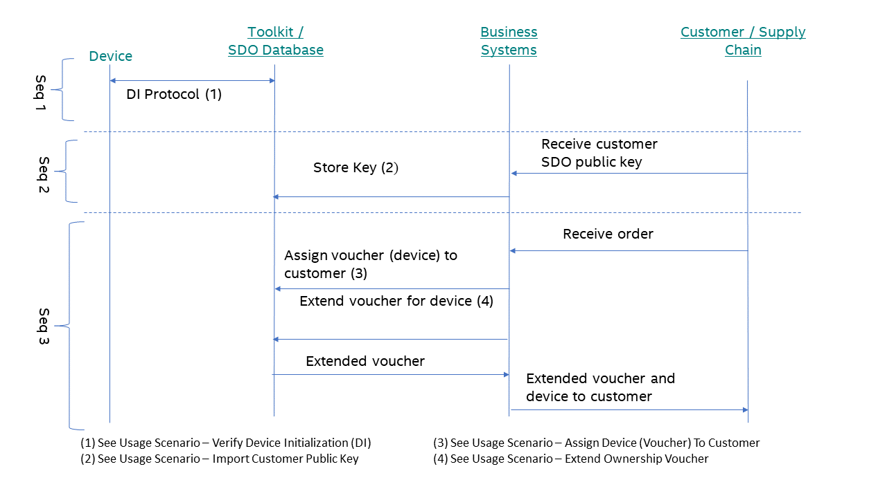
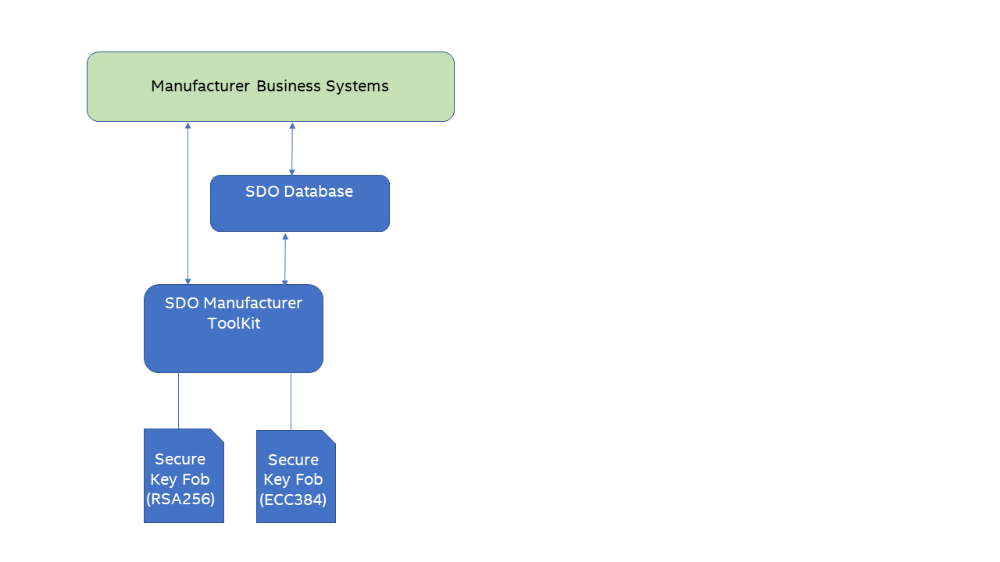
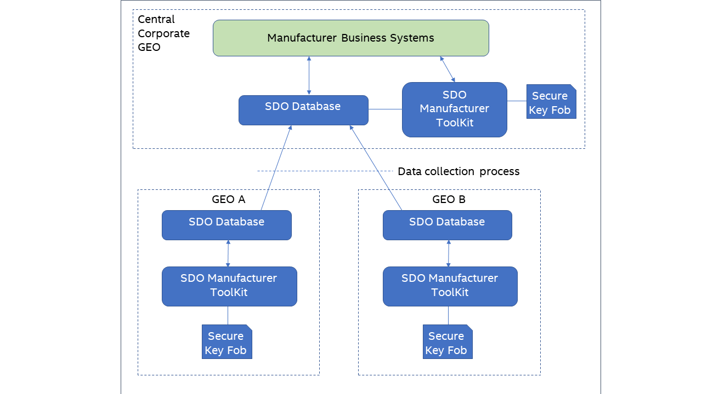

Introduction¶
Secure Device Onboard (SDO) enhances the out-of-the-box setup and provisioning experience for connected IoT devices. The Secure Device Onboard project provides the manufacturer toolkit and reseller toolkit for manufacturers (OEMs, ODMs, or 3rd party integrators) to enable SDO on their devices. This document details how a manufacturer can use these tools to produce an SDO-enabled device.
Terminology¶
Refer to the Secure Device Onboard Reference page.
Related Documents¶
Your role as a supply chain integrator is combined with solutions implemented by manufacturers and device management service providers to enable a complete end-to-end experience. For more information, refer to the Secure Device Onboard Reference page.
Overview¶
To produce Secure Device Onboard (SDO)-enabled devices, a manufacturer must run the SDO device initialization (DI) protocol on the device. The DI process sets security credentials in secure storage in the device and creates the initial ownership voucher. The manufacturer makes use of the provided tools for this process: a manufacturer toolkit, an SDO Database, and software that runs on the device to perform DI. The manufacturer toolkit acts as a DI server for the devices. After running DI on the device, the resulting ownership voucher is stored in the SDO Database. At this point, the SDO security credentials have been stored in the device and the device is SDO ready. When the device is sold to a customer, the ownership voucher is extended and shipped along with the device. A complete integration and deployment of SDO in a manufacturing environment requires a fair amount of planning and effort. However, for development, test, and enabling purposes, a much simpler evaluation deployment can be done.
Manufacturer Toolkit¶
The main function of the manufacturer toolkit is to serve as a DI protocol server. The manufacturer toolkit runs as a web service and makes use of the SDO Database for configuration and storage of ownership vouchers. All configuration and data for the manufacturer toolkit is stored in the SDO Database. Views are used to read data while stored procedures are used to update the configuration. The following figure shows an overview of the SDO database.
Figure 1. An Overview of the SDO Database

Evaluation Deployment¶
The evaluation deployment is useful for development, test, and enabling purposes. The evaluation deployment can fully initialize a device to the same extent as the production deployment but does not require any integration with business systems nor the setup of a secure key fob.
Step 1: Prepare Hardware Infrastructure¶
You need to have one machine that can run the manufacturer toolkit as well as host the Secure Device Onboard (SDO) database. A non-production environment has minimal requirements; the machine can run either the Linux* OS (version 18.04) or Windows* 10 OS.
Step 2: Deploy Database and Toolkit¶
Install the SDO database and toolkit, see Database and Toolkit Installation. It is recommended to choose the key store file option unless there is a specified need to test with a secure key fob.
Step 3: Test¶
Set up the device to run the SDO DI protocol (refer to device specific documentation for details). Run DI on the device against the manufacturer toolkit web service. Use the database view to query the device state and verification completion of the DI.
Production Deployment¶
Step 1: Integrate with Business System Processes¶
Producing Secure Device Onboard (SDO)-enabled devices requires integration with your business systems and manufacturing processes.
Your business system processes need to:
- Manage SDO public key(s) from customers, and the public key(s) storage in the SDO database. SDO requires the customer’s SDO public key. Your customer interactions and processes must be modified as required to support this receipt of their public key and then to import this key into the SDO Database. See Import Customer Public Key. Whether this key is delivered with each order or done before separately depends on your processes and interaction with your customers.
- Manage ownership vouchers sent to customers.
After a device is initialized with SDO, an initial ownership voucher is produced and stored in the SDO Database. This voucher must first be “signed” to a customer before sending to the customer.
The ownership voucher management task has the following two steps:
- Assign a voucher (device) to a customer (technically, a customer public key) See Assign Device (Voucher) to Customer.
- Perform voucher extension. The resulting extended voucher can then be sent to the customer.
The following are the implied requirements:
- It is assumed that you already have some way to track which device was shipped with which order. Most likely, this was done with serial numbers. With SDO, there is an additional requirement that you must match voucher(s) with physical devices such that the voucher(s) delivered to the customer are those that correspond to the actual physical devices that are delivered.
- You need to update or modify the existing B2B channel to include an ownership voucher for each physical device delivered to the customer. Typically, these vouchers would be linked to the order in a particular way, but the details will vary for each manufacturer.
- If a customer loses one of these vouchers and requires a replacement, then you must re-generate this voucher or retrieve the voucher from the device or order data if you choose to store the extended voucher with the device or order data.
The following figure shows a typical usage scenario between your business systems and the SDO tools. The order and timing of each sequence may vary with your manufacturing, ordering, and inventory management processes. The only firm requirement is that Seq 1 and Seq 2 happens before Seq 3.
Figure 2. A Typical Usage Scenario between Business Systems and SDO Tools

Step 1.1: Device Serial Number¶
SDO requires the correct ownership voucher to be delivered with each physical device. Therefore, an identifier that is present on the physical device, for example the serial number, can be used. Scanning an identifier on the physical device allows for the correct voucher to be selected (if an incorrect voucher is delivered, SDO will fail later in the supply chain when run). If, for example, the serial number is already known, the correct physical device can be selected. The same identifier must also be used when running the DI because the identifier is used as an index when storing vouchers in the SDO Database, and later when identifying vouchers.
Step 1.2: Customer Descriptor¶
A customer descriptor is used when importing customer public keys and assigning a voucher to a customer. This descriptor is a string value that must uniquely identify the customer. It is up to you, the manufacturer, to form this value. Duplicates are to be avoided because this value would be used when importing public keys and extending ownership vouchers.
Step 1.3: Deploy for Multiple Key Types¶
If you, as a manufacturer, produces both the Rivest–Shamir–Adleman (RSA)- and elliptic-curve cryptography (ECC)-based devices, you will need to support two different key types. However, because of the limitations of the secure key fob (For example, Yubikey*), the deployment of multiple key types requires that multiple secure key fobs, each with one type of key pair, be used. The following figure shows a usage example.
Figure 3. An Example of Using Two Different Key Types

Step 1.4: Deploy for Multiple Manufacturing Stations¶
If you are manufacturing SDO devices at multiple geographic locations, then you will need to consider how best to deploy the SDO Manufacturer Toolkit. A typical option is shown below. Install the toolkit and an SDO Database at each location – both at the remote GEOs as well as the central location. Each manufacturing GEO performs device initialization while the central location performs the Ownership Voucher extension. A data collection process is periodically invoked to collect data from each GEO’s SDO Database and import it into the central SDO Database.

Step 2: Prepare Hardware Infrastructure¶
You need to acquire and put into place the following:
- A system to host the manufacturer toolkit and SDO Database
- A private network to attach devices to the manufacturer toolkit
- Secure key fob(s)
The following tables list the hardware infrastructure for Linux*- and Windows*-based manufacturer toolkits, respectively.
Table 3. Linux* OS-based Manufacturer Toolkit
| Item | Specification |
|---|---|
| Connectivity | Two Ethernet networks: one to connect to the IoT device and a separate network to connect to the backend to provide access to voucher data and the voucher extension operation. |
| Secure Key Fobs | YubiKey* security key (see https://www.yubico.com/products/yubikey-hardware/) |
| Operating System | Ubuntu* OS version 16.x or 18.x |
| Software | Java* Runtime Environment (JRE) software version 11 Oracle* software (http://www.oracle.com/technetwork/java/javase/downloads/jre8-downloads-2133155.html) or OpenJDK* (http://openjdk.java.net/install/index.html) · Apache Tomcat* (http://tomcat.apache.org/) software version 8 or later · MariaDB* (https://mariadb.org/) server version 10.4 or later |
Table 4. Windows* OS-based Manufacturer Toolkit
| Item | Specification |
|---|---|
| Connectivity | Two Ethernet networks: one to connect to the IoT device and a separate network to connect to the backend to provide access to voucher data and the voucher extension operation. |
| Secure Key Fobs | YubiKey* security key (see https://www.yubico.com/products/yubikey-hardware/) |
| Operating System | Windows* 10 OS or Windows Server* OS version 2012 R2 or later, 64-bit version. |
| Software | Java Runtime Environment (JRE) software version 11 Oracle* software (http://www.oracle.com/technetwork/java/javase/downloads/jre8-downloads-2133155.html) or OpenJDK (http://openjdk.java.net/install/index.html) · Apache Tomcat* (http://tomcat.apache.org/) software version 8 or later · MariaDB* (https://mariadb.org/) server version 10.4 or later · OpenSC Utilities (https://github.com/OpenSC/OpenSC/releases/download/0.17.0/OpenSC-0.17.0-win64_vs12-Release.msi. After the installation, you will find the following DLL file installed: C:\windows\system32\opensc-pkcs11.dll |
Step 3: Deploy Database and Manufacturer Toolkit¶
Install the SDO database and toolkit, see Database and Toolkit Installation. Be sure to use the secure key fob option for the key storage.
Step 4: Validate with Test Device¶
Set up an SDO-capable device to run the SDO DI protocol (see Device DI Setup). Run DI on the device against the manufacturer toolkit web service. Use the database view to query the device state and verify the completion of DI.
Database and Toolkit Installation¶
You can either use the Docker* script provided or deploy manually.
Setup: Docker* Script¶
The Docker* script requires a key store file containing the manufacturer keys. See Supply Chain Tools Key Store Setup Guide for details. For the remaining setup, follow the instructions in the readme file in the SDO Docker directory.
Setup: Manual¶
- For the following steps, run as root or use sudo.
- Install the MariaDB* server from https://mariadb.org/.
- For each of the following commands, use the ‘root’ user you defined in step 2 where you installed the MariaDB* server and run each script on the machine where the MariaDB* server is installed. You’ll find the scripts in both the source (scripts/mysql) and binary (docker_*) files of the release.
- Edit rt_config.sql and mt_config.sql as directed by the comments in each file. (These files are located in the sources of the SDO release package under /SupplyChainTools/scripts/mysql or /SupplyChainTools/scripts/sqlserver).
- Run the rt_create.sql script:
mysql -u <username> -p < rt_create.sql - Run the mt_create.sql script:
mysql -u <username> -p < mt_create.sql - Run the rt_config.sql script:
mysql -u <username> -p < rt_config.sql - Run the mt_config.sql script:
mysql -u <username> -p < mt_config.sql - Create a key store containing the manufacturer keys. See Supply Chain Tools Key Store Setup Guide for details.
- Set up and deploy the toolkit web service. If this is an evaluation deployment, you have an option to run the web service directly from the command line. If you choose to do this, instructions are provided in the readme file included with the toolkit software. Follow those instructions. You can verify that the toolkit starts up correctly by looking at the output in the window where you ran the toolkit. Installation is then complete, and you can skip the following steps. For example, if running directly:
java -Dspring.datasource.url="jdbc:mariadb://localhost:3306/sdo" -Dspring.datasource.username=sdo_admin -Dspring.datasource.password=sdo -Dsdo.keystore="file:///sdo.p12" -Dsdo.keystore.password=123456 -jar ./manufacturer-webapp-1.8.war - Install the Apache Tomcat* software from http://tomcat.apache.org/ or equivalent.
- Update the listener port. Most likely this will be 8039 as the default for SDO Clients but this may vary because of your specific network environment. For example, with Apache Tomcat* version 8 on the Linux* machine, this setting can be found in var/lib/tomcat8/config/server.xml. Refer to the documentation specific to your Apache Tomcat* version and operating system.
- Copy the manufacturer toolkit war file into the Apache Tomcat* webapps directory (on the Linux* machine this would typically be /var/lib/tomcat8/webapps). Rename the war file to ROOT.war.
- Start the Apache Tomcat* service. This will trigger the Apache Tomcat* software to unpack the war file and create individual files in the webapps/ROOT directory.
-
Add the remaining toolkit configuration for Apache Tomcat* (see the readme file included with the toolkit software for further details). For Apache Tomcat* version 8 running on the Linux machine, these settings are located in /var/lib/tomcat/webapps/ROOT/WEB-INF/classes/application.properties. An example is given as follows:
spring.datasource.url=jdbc:mariadb://localhost:3306/sdo?useSSL=false spring.datasource.username=sdo_admin spring.datasource.password=sdo sdo.keystore=file:///var/lib/tomcat8/webapps/ROOT/sdo.p12 sdo.keystore.password=123456Note:
- The database user and password should match those configured in rt_config.sql.
- datasource.url: be sure to use localhost rather than the IP address.
- sdo.keystore: this is either the pathname to the software key store (jks) or to the public key cryptography standards (PKCS#11) library if using secure key fob. Be sure to not use quotes around the value.
- sdo.keystore.password: this is the password for the software key store or the pin code of the secure key fob.
-
Start or restart the Apache Tomcat* service.
- Test with the status page: http://
/api/v1/status. If the page does not load, look at the Apache Tomcat* logs to debug any errors.
Setup: Troubleshooting¶
Troubleshoot using the following steps if the toolkit web service does not start correctly:
-
Verify that the JDBC* string is correct.
An example is: jdbc:mariadb://localhost:3306/sdo. Be sure MariaDB* is included, the port is specified as 3306, and the host name is correct.
-
Verify that the database user and password are correct.
The user and password should be the same as those defined in rt_config.sql. You may wish to use some third-party database tool to log into the database to test that the user and password are correct.
-
Verify the server settings
Look at mt_config.sql and verify that the rendezvous info and validity intervals are specified. If the rendezvous info and validity intervals are not specified, the web service will not start up.
-
Look at the Apache Tomcat* log (or run the web service from the command line and look at the output).
The log messages will indicate the error.
Usage Scenario¶
Verify Device Initialization (DI)¶
To determine the state of a device or devices, the database view, v_mt_device_state, is available. Data can be retrieved programmatically with a third-party database tool or through the command line:
mysql -u <username> -p -h <SDO database server hostname or ip> -e “use sdo; select * from v_mt_device_state”
Import Customer Public Key¶
Import the customer public key by calling the rt_add_customer_public_key stored procedure. In a production environment, the import would likely be invoked programmatically. For test, development, or evaluation purposes, run from the command line as follows:
mysql -u <username> -p -h <SDO database server hostname or ip> -e “use sdo; call rt_add_customer_public_key('CUST_DIST_12345', '-----BEGIN PUBLIC KEY-----
MIGfMA0GCSqGSIb3DQEBAQUAA4GNADCBiQKBgQCqGKukO1De7zhZj6+H0qtjTkVxwTCpvKe4eCZ0
FPqri0cb2JZfXJ/DgYSF6vUpwmJG8wVQZKjeGcjDOL5UlsuusFncCzWBQ7RKNUSesmQRMSGkVb1/
3j+skZ6UtW+5u09lHNsj6tQ51s1SPrCBkedbNf0Tp0GbMJDyR4e9T04ZZwIDAQAB
-----END PUBLIC KEY-----’)”
Note
Be sure this is the public key pem and not the certificate pem. The public key can be extracted from the certificate with OpenSSL*:
openssl x509 -pubkey -noout -in <cert file>.pem > <pubkey>.pem
Assign Device (Voucher) to Customer¶
Assign the device (voucher) by calling the rt_assign_device_to_customer stored procedure. In a production environment, the assignment would likely be invoked programmatically. For test, development, or evaluation purposes, run from the command line as follows:
mysql -u <username> -p -h <SDO database server hostname or ip> -e “use sdo; call rt_assign_device_to_customer(‘SN12345678’, ’CUST_DIST_12345’)”
Extend Ownership Voucher¶
Ownership voucher is extended through the REST API. In a production environment, the extension would be done programmatically. For test purposes, you can use curl to invoke the extension:
curl -X GET http://<mfr toolkit ip>:<PORT>/api/v1/vouchers/<device serial no>
The result will be the extended voucher.
Testing with an SDO Device¶
Any device that can run the SDO DI protocol can be used to perform an end-to-end test of the Manufacturing Toolkit. If an SDO device is not available, then the SDO PRI Device can be used. This is a Java based Device Simulator that can run anywhere Java is supported. Please refer to the readme in the PRI directory of the SDO release package for details on how to run this device.
Regardless of which device is used, care must be taken when specifying the value of the device m-string in the DI protocol. See next section for details.
Device m-string¶
The m-string is used to provide device-specific information that is used to manage ownership vouchers. The m-string must be present and cannot be empty (the manufacturer toolkit will output an error in such case).
In the development, test, or enablement environment, any non-empty value can be used (For example, “deviceA” or “deviceB”). The manufacturer toolkit will take the entire m value as the device serial number.
For the production environment, creating the m-string value is complex, therefore, it is recommended to use a script to generate the value. The m-string is a base 64-encoded set of null terminated string values as follows:
<key type identifier><null-1><serial number><null-2><model number>[<null-3><CSR>]
where:
-
<null>translates to value 0x00 -
<null-1>and<null-2>are mandatory -
Key type identifier= 1 | 13 | 141 = RSA256, 13 = ECC256, 14 = ECC384
Identifies the type of cryptography used on the device. They key type used to extend ownership vouchers must match this type.
-
Serial number= device serial numberThe serial number should uniquely identify the device and ideally, should be present on the device itself (such as, the label). It is used to correlate the device with its associated ownership voucher by manufacturers and resellers when shipping devices.
-
Model number= device model numberThe model number should identify the type of device model. This data is not strictly required and can be empty if desired.
-
CSR= certificate signing request.The CSR is optional and is only required for ECC devices.
is required only if the CSR is included. The format of the CSR should be base 64-encoded public key cryptography standards (PKCS#10) in privacy-enhanced mail (PEM) format.
An example of how to generate the m-string value is given below. This can be leveraged to programmatically generate the sdo_di -mi arg.
$ echo -ne '1\0serial\0model' | base64
MQBzZXJpYWwAbW9kZWw=
And a demonstration of what’s in the encoding:
$ echo -ne '1\0serial\0model' | base64 | base64 -d | xxd